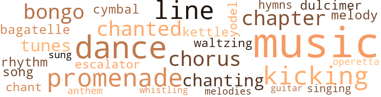
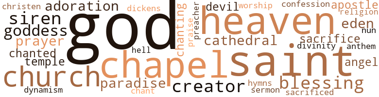

Magnificent White Man, by Hunter, Helen (1964)
55 music-related terms matched in this text.
Most frequent terms in this topic: music (10); dance (5); promenade (3); line (3); kicking (3)
bagatelle.n.01
Definition: a light piece of music for piano
| word | sentence |
|---|---|
| bagatelle | Do they regard it as a bagatelle of God that all babies - themselves included - originate from fathers ? |
bongo.n.01
Definition: a small drum; played with the hands
| word | sentence |
|---|---|
| bongo | I am going to send you , together with the bongo drums , a fine set of tools . |
| bongo | She was chanting the lyrics to the bongo drum-beat , herself lost in reminiscence . |
chant.n.01
Definition: a repetitive song in which as many syllables as necessary are assigned to a single tone
| word | sentence |
|---|---|
| chant | He turned , went across the room , pressed the noon button on the gamut and came back to her , while the glass enclosure turned to a screen , reflecting the Garden of Eden , rainbow-colored flowers and plants , the hide-and-seek of exotic birds of enchanting plumage , a waterfall beyond , powderized snow in the blazing sunshine , a chorus of the twitter of birds in the background , as impressive as the mysterious chant of hymns . |
chapter.n.01
Definition: a subdivision of a written work; usually numbered and titled
| word | sentence |
|---|---|
| chapter | He turned away from the screen , his gesture enfolding the audience , " Gentlemen , I think we can close this chapter . |
| chapter | " Oh , the first chapter of my memoirs , well , I am trying to figure out how the universe originated , the very beginning of the beginnings , and how the sun , moon and the stars can stay steady up there , while the seas and earth are down here , upside down . " |
chorus.n.01
Definition: any utterance produced simultaneously by a group
| word | sentence |
|---|---|
| chorus | He turned , went across the room , pressed the noon button on the gamut and came back to her , while the glass enclosure turned to a screen , reflecting the Garden of Eden , rainbow-colored flowers and plants , the hide-and-seek of exotic birds of enchanting plumage , a waterfall beyond , powderized snow in the blazing sunshine , a chorus of the twitter of birds in the background , as impressive as the mysterious chant of hymns . |
| chorus | " I want a chorus of a thousand nightingales to serenade me while I am sleeping tonight . " |
cymbal.n.01
Definition: a percussion instrument consisting of a concave brass disk; makes a loud crashing sound when hit with a drumstick or when two are struck together
| word | sentence |
|---|---|
| cymbal | Worse than dulcimer hammers the cymbal . |
dance.n.01
Definition: an artistic form of nonverbal communication
| word | sentence |
|---|---|
| dance | " And what dance almightly Caesar wishes me to dance ? " |
| dance | " Here , " she pointed at the small place around , " is the yard where I grew up on the cotton fields , and there 's my mother , making popcorn , shaking the griddle over the open fireplace , with brothers , sisters and you watching my dance . " |
dance.v.03
Definition: skip, leap, or move up and down or sideways
| word | sentence |
|---|---|
| dance | " And what dance almightly Caesar wishes me to dance ? " |
| dance | Penelope came forward , uncertain , holding out her hands as though accepting an invitation to dance . |
| dance | Look at the lustful bushes far and wide , charmed by spring , which showered the frail branches with pink and white petals , as delicate as bridal veils and so delighted to dance over and over in the caressing breeze . |
dulcimer.n.02
Definition: a trapezoidal zither whose metal strings are struck with light hammers
| word | sentence |
|---|---|
| dulcimer | Worse than dulcimer hammers the cymbal . |
escalator_clause.n.01
Definition: a clause in a contract that provides for an increase or a decrease in wages or prices or benefits etc. depending on certain conditions (as a change in the cost of living index)
| word | sentence |
|---|---|
| escalator | Along the underground tunnel which connected the Survival Apartment to the main building , the green lights clicked to emergency red as Miss Roland , her agitation increasing , initiated her small feet on the electric escalator , letting herself be carried through - too slowly . |
guitar.n.01
Definition: a stringed instrument usually having six strings; played by strumming or plucking
| word | sentence |
|---|---|
| guitar | Somebody unseen uttered a word of command , somewhere near , which sounded like the scraping of a guitar in the tragic silence . |
hymn.n.01
Definition: a song of praise (to God or to a saint or to a nation)
| word | sentence |
|---|---|
| hymns | He turned , went across the room , pressed the noon button on the gamut and came back to her , while the glass enclosure turned to a screen , reflecting the Garden of Eden , rainbow-colored flowers and plants , the hide-and-seek of exotic birds of enchanting plumage , a waterfall beyond , powderized snow in the blazing sunshine , a chorus of the twitter of birds in the background , as impressive as the mysterious chant of hymns . |
| anthem | Hurray , Hurray , Hurray broke out for miles and miles around , spread and grew in all directions , like a national anthem sung by thousands and thousands of enthusiastic baby-watchers . |
kettle.n.04
Definition: a large hemispherical brass or copper percussion instrument with a drumhead that can be tuned by adjusting the tension on it
| word | sentence |
|---|---|
| kettle | As he nodded his approval , and the record set to drumming , the soul-stirring military march beat the air , more and more in motion like water in the kettle over the flame she wigwagged into dancing . |
kick.v.04
Definition: kick a leg up
| word | sentence |
|---|---|
| kicking | However , not to the Clyde brothers - awful sorry , the Clyde brothers regard a woman of beauty for no flowerbed but an assortment of resistant , kicking bones . |
| kicking | " Not much kicking after a two-week period of inflexibility , " one of the physicians joked , full of pride . |
| kicking | She shook her head in sudden fear , " Oh - again those awful uncomfortable moves in here , the baby kicking . |
music.n.01
Definition: an artistic form of auditory communication incorporating instrumental or vocal tones in a structured and continuous manner
| word | sentence |
|---|---|
| music | " Well , nine months or so , " he stated gravely , which to her sounded like music . |
| music | But then the music suddenly stopped - a diversion he utilized to remove the record . |
| music | A brief gesture of his in the direction of numerous technicians wire-latticing the wall , and there rose instantly the dreamlike music - Brahms Hungarian Dance , loveliness , passion , poetry , delight , agony . |
| music | Right then the scientist recalled Zambalina , his former darling-est ; yes , the beast also loved music and occasionally went crazy for Tchaikowsky . |
| music | Working hard to satisfy her many wishes was a string of guards ; male and female servants stood in attention , watchful of her every move , plus two music bands , one calypso , the other American , with a group of skilled Hawaiian hula dancers at her disposition . |
| music | And , of course , music in the background was adequate to the scenery , here the sweet twitter of birds , a romantic rhapsody , and there the distant hum of drum-beat of the jungle . |
| music | " Well , are you in no mood to answer my good morning ? " admonished Doctor Clyde , who stood by , listening to the weird music . |
| music | Just as he had anticipated , the Harlem Negroes were up in a sinister spectacular , around the block , staging a funeral parade , with music and drum-beat usually given to a national martyr . |
| music | Artists write it down in books , poems , music , paintings . |
| music | How do you think immortals like Beethoven , Bach , Tchaikovsky , and so on wrote music that never dies ? |
operetta.n.01
Definition: a short amusing opera
| word | sentence |
|---|---|
| operetta | The clamor subsided , as though the curtain went up for an operetta , the human tide split , letting the potentates pass through and into the building . |
promenade.n.01
Definition: a formal ball held for a school class toward the end of the academic year
| word | sentence |
|---|---|
| promenade | Untroubled , he advised the passenger to get out and join the incensed multiude along the promenade , " It 's a great day for the Irish , " the old man thanked for the money brightly , drifting backwards . |
| promenade | As 98th street descended directly and smoothly to Riverside Drive , Penelope slipped out for a minute or so , to get another good look at the promenade - a thousand-miles-long emerald walk , as her eyes draw the picture , with the lovely tirra-lirra of birds whisking about the valley . |
| promenade | While walking homeward down the lovely promenade , her thoughts , more realistic , returned to her parents , the cold flat , brother Brute , the lynching he had promised in case of a new failure in New York City . |
rhythm.n.04
Definition: the arrangement of spoken words alternating stressed and unstressed elements
| word | sentence |
|---|---|
| rhythm | He had never experienced anything like it , as the rhythm of the drum-beat quickened , the tremor of her loose hips increased , as though every nerve was electrified within . |
sing.v.02
Definition: produce tones with the voice
| word | sentence |
|---|---|
| sung | Hurray , Hurray , Hurray broke out for miles and miles around , spread and grew in all directions , like a national anthem sung by thousands and thousands of enthusiastic baby-watchers . |
singing.n.01
Definition: the act of singing vocal music
| word | sentence |
|---|---|
| singing | " You heard me singing , did you ? " she said a little abashed , rose to her feet , letting herself be admired . |
song.n.01
Definition: a short musical composition with words
| word | sentence |
|---|---|
| song | But anything you did to me , I consider it a blessing , and anything you say to me , it sounds like a love song , " she said in tears . |
tone.v.01
Definition: utter monotonously and repetitively and rhythmically
| word | sentence |
|---|---|
| chanted | He whispered into her ear kind words of pity and admiration , caressed her withered face , chanted falsely , " Wo n't you answer your daddy and open your eyes and get a glimpse of the wondrous fairyland surrounding you ? " |
| chanting | She was chanting the lyrics to the bongo drum-beat , herself lost in reminiscence . |
| chanted | One would have imagined that people would get tired of waiting , and be annoyed by getting pushed back by the police , but no , they enjoyed it ; they enjoyed pushing and shouting ; they took the street for a ballroom , hopped and chanted , " We-are-waiting-for-the-babies . " |
| chanting | Bright gold rays flooded the ward , as they exquisitely , in light abandon , attempted to please their mother , whispering , chanting silvery tunes like a breeze caressing the waves . |
tune.n.01
Definition: a succession of notes forming a distinctive sequence
| word | sentence |
|---|---|
| line | They had developed a private telepathy line of their own . |
| melody | " I wish , before I get burned , to hear a nice melody , quiet , slow , like beep-beep-beep , in the church . " |
| tunes | " One just has the feeling that the atmosphere is being loaded with ideas , tunes , colors . |
| melodies | Got it from the air imbued with melodies . |
| line | Standing there in a double line , still incredulous , their eyes focused on the bassinets , all they could do give out a flashy salute to the Do , Re , Mi , Fa , each crowning its respective bassinet , meaning the name of the baby . |
| tunes | Bright gold rays flooded the ward , as they exquisitely , in light abandon , attempted to please their mother , whispering , chanting silvery tunes like a breeze caressing the waves . |
| line | " Are you seeing me defiantly marching in front of a long line - three cheers - and watered down by fire hoses ? " |
waltz.v.01
Definition: dance a waltz
| word | sentence |
|---|---|
| waltzing | They exercised the same generosity when she occasionally held out her wish to go out for a ride - not a bicycle , not a bus , but one of those waltzing white stallions imported for her from Vienna , and kept in the comfortable horse establishment outside the city . |
whistle.v.01
Definition: make whistling sounds
| word | sentence |
|---|---|
| whistling | But wherever she strolled , chasing butterflies down the valley or waving at the whistling trains rolling by , wishing she was on one , she used to return home for supper , with an amazing punctuality , her face shining with excitement , her gullet full of pacifying stories to be told . |
yodel.v.01
Definition: sing by changing register; sing by yodeling
| word | sentence |
|---|---|
| yodel | By doing frequently " You-ho-ho , " she acquired the ability to yodel , to her own delight and that of the nurses and guards around , watching her discreetly . |
168 violence-related terms matched in this text.
Most frequent terms in this topic: hate (14); kill (14); hurt (10); fighting (8); weapon (6)
abhor.v.01
Definition: find repugnant
| word | sentence |
|---|---|
| loathed | Most of all , she loathed to welcome the girl - the imposing living holder of the precious assortment of 206 bones . |
| loathed | What Penelope wished for they had cherished for ages , and now loathed , and were tired of their wealth . |
| loathed | But what she loathed most was to obey , obey the wish of those who frantically wanted her to stop flying and come back to earth . |
abhorrence.n.01
Definition: hate coupled with disgust
| word | sentence |
|---|---|
| abhorrence | With a shiver of abhorrence she wondered why her mother was dressed in mourning attire , extravagantly veiled in black , as if she had suffered a great loss - brother Brute perhaps ? |
| abhorrence | There was a gasp , that of the crowd , as the dazzling blonde held out her hand , and the old woman rejected the handshake with a move of abhorrence . |
| abhorrence | She began to regard nuclear science and all kinds of science with abhorrence . |
aggravation.n.01
Definition: an exasperated feeling of annoyance
| word | sentence |
|---|---|
| exasperation | It was no longer a comfort but an exasperation . |
anger.n.01
Definition: a strong emotion; a feeling that is oriented toward some real or supposed grievance
| word | sentence |
|---|---|
| anger | " I am not revealing it today , " the scientist , conquering his anger , ended the impromptu investigation . |
| anger | As the scientist , red-faced from anger , his eyes like blue flashes fired on her , she pressed his heart with her hand . |
| anger | The scientist twisted her over by the shoulder , his voice thick with anger . |
bayonet.n.01
Definition: a knife that can be fixed to the end of a rifle and used as a weapon
| word | sentence |
|---|---|
| bayonet | One of the comrades hastily swung his bayonet for one of the babies . |
blast.v.03
Definition: use explosives on
| word | sentence |
|---|---|
| shelling | Around the Block a frightening shelling went on , and just about the same time police mortars began to thump in . |
contemn.v.01
Definition: look down on with disdain
| word | sentence |
|---|---|
| scorned | " Maternity dresses , " she scorned , " either you or the Univelt panjandrums have sent me so many , that I could wear two at a time every hour on the hour . " |
| scorned | " That I doubt , " Penelope scorned . |
| despised | The very image of a born princess mistakenly placed in despised misery , she preferred to be left alone , and possibly fritter away the summer by lolling on the grass , down the valley , and watching the sky . |
craze.n.02
Definition: state of violent mental agitation
| word | sentence |
|---|---|
| frenzy | Her eyes fixed on the ceiling , she gasped in fear , when again the hateful hollering sent her into a state of frenzy . |
decapitate.v.01
Definition: cut the head of
| word | sentence |
|---|---|
| behead | Oh , those ambitious reporters , they would practically behead him , and gladly . |
eliminate.v.03
Definition: kill in large numbers
| word | sentence |
|---|---|
| annihilate | Well , nuclear insemination and , altogether , the divine atoms would annihilate any of vulgar sexual participation , anyway . |
elimination.n.05
Definition: the murder of a competitor
| word | sentence |
|---|---|
| elimination | He could almost hear derisive comments like " the American , " " the trillion and billion man from Texas , " which only made it harder to explain why , - why the imperative necessity of creating brand-new human beings , why the end of gigantic current problems of money and greed , why the elimination of diseases like madness , physical disability , degeneration of all kinds . |
exterminate.v.01
Definition: kill en masse; kill on a large scale; kill many
| word | sentence |
|---|---|
| exterminated | " But then , my beloved one , you get burned alive or your head cut off , plus your entire family exterminated like bugs . " |
| exterminating | " I wonder - " " So do I , " Henry said , abstracted , his mind already science bound , for to him any earthly problem seemed grotesque , earth itself but an immense zoo , populated with lots of imperfect human beings ; it was an anthill , the ants crazily running round and around , exterminating each other . |
ferociousness.n.01
Definition: the trait of extreme cruelty
| word | sentence |
|---|---|
| brutality | He shook his head , as though brutality was beyond him , and life itself ended with the loss of Doctor Clyde , and the world itself was going to an end . |
fight.v.02
Definition: fight against or resist strongly
| word | sentence |
|---|---|
| fighting | I detest you - I hate you , " she broke out crying , fighting him and beating him in the chest , all over . |
| fighting | The identical expression of sympathy in their blue eyes , alike uprightness and comeliness of men interested in doing the correct thing , to please themselves by fighting for the welfare of others . |
| fighting | Do n't kid yourself , right now several outstanding American corporations are fighting in cut-throat competition for the favor . |
| fighting | " Will you please end the Battle of the Bulge , " Doctor Clyde , who had stood by and witnessed the two women fighting for his favors , interfered gently . |
| fought | When Norman Clyde finally arrived there and fought his way through , police and Secret Service men retreated respectfully . |
| fighting | The uncontrollable mob broke through , attacked the doorways , the lobby , the corridors , fighting the police and guards . |
| fought | With the plunging multitude after him , Doctor Clyde fought his way through , but before he could draw closer to the terrace , and before anyone could flee or beat a retreat , there interfered a terrifying whooosh in the air , and the four cherubs folded their wings , gently , as if shaking off the star-dust like golden powder . |
| fighting | In the helter-skelter commotion , machine-guns blasting and " Help-help " shouting , a husky , slit-eyed brown guy stood up , gorbelly and ready to kill , pointing his pistol at the scientist 's chest , while his men were fighting their way through , toward the babies . |
| defending | Doctor Clyde showed no intention of defending himself against the attacker , his only worry being to save the underground of the Block , save the precious guinea pigs in cages , and save everything pertaining to his experimental work . |
| fighting | The wild cracking of machine guns convinced everyone that for miles and miles around , New Yorkers , and about the same number of enemies , were fighting to defend or capture Doctor Clyde . |
| defend | The wild cracking of machine guns convinced everyone that for miles and miles around , New Yorkers , and about the same number of enemies , were fighting to defend or capture Doctor Clyde . |
| fighting | What the Negroes are fighting for would only mish-mash that perfect world that they created through so many thousands of years . " |
| fight | To my own opinion , what Negroes should fight for is not the freedom we already enjoy , but something more palpable , such as territorial rights . |
| fight | Evidently surprised by the unforeseen call , Sam Okay was hiding either on the balcony or , protected by the drawn draperies , he was prepared to fight back . |
fit.n.01
Definition: a display of bad temper
| word | sentence |
|---|---|
| tantrums | " When , someday , amid white furs and white carpets in here , you 'll be rolling amid million-dollar bills and your tantrums , deadbroke , your mother will be permitted to meet you here face to face . |
fury.n.01
Definition: a feeling of intense anger
| word | sentence |
|---|---|
| fury | From that memorable September night , the past vanished like a ball thrown over the fence ; everything old had gone to pieces , while Penelope herself emerged as a gem saved for posterity , " just to make brother Brute shiver with fury . " |
gag.v.06
Definition: cause to retch or choke
| word | sentence |
|---|---|
| choked | " I guess the contestants are all white females , " she commented in panic , her vocal cords choked in her throat . |
| choked | The place I heard of , where exquisite Negroes live , " she said under her breath , almost choked by emotions bulging like tides of the stormy sea . |
| choke | Watching , horrified , he feared she would swing on him , choke him , or - God knows - if she had a gun , she would fire without pity . |
| choked | " Oh - death does n't mean anything to me , as long as I can be useful to you , " she reassured him , her voice choked in tears . |
| choked | " What happened to me should n't happen to a dog , " she choked , and sniffed , " and I wo n't write my Mother about it , either . " |
| choked | While she waited for death to come along , almost choked by tears , everything stood stock still , far and wide ; but no one came around to stop her dying . |
gun.n.01
Definition: a weapon that discharges a missile at high velocity (especially from a metal tube or barrel)
| word | sentence |
|---|---|
| gun | Watching , horrified , he feared she would swing on him , choke him , or - God knows - if she had a gun , she would fire without pity . |
| guns | A split second later machine guns cracked , their objectives the babies , with the strange result that the firing returned on the gun-holders , who were falling like carbonized flies . |
| guns | " We were hoping that - that you would come sooner , " the astonished spokesman hemmed and hawed , pointing to the brutes immobilized by their own guns . |
| guns | The wild cracking of machine guns convinced everyone that for miles and miles around , New Yorkers , and about the same number of enemies , were fighting to defend or capture Doctor Clyde . |
hate.n.01
Definition: the emotion of intense dislike; a feeling of dislike so strong that it demands action
| word | sentence |
|---|---|
| hatred | Are the atomic rays developing hatred instead of love desire within her ? |
| hatred | Men and women , old and young , cheerful in the falling snow , as though a mighty hand tossed problems and hatred into the sea . " |
hate.v.01
Definition: dislike intensely; feel antipathy or aversion towards
| word | sentence |
|---|---|
| detest | I detest you - I hate you , " she broke out crying , fighting him and beating him in the chest , all over . |
| hate | I detest you - I hate you , " she broke out crying , fighting him and beating him in the chest , all over . |
| detesting | " I 'll be detesting you all my life for that ! |
| hate | " Money seems mincemeat to you , " Penelope shrugged her shoulders , " but I hate to sound like a roadside bandit . |
| hate | I hate to disappoint you , Dash 3515 , but there will be drastic punishment , financial and corporal , for any of your hasty undertakings . " |
| hating | " Gee , what 's the reason of hating me that much , and guarding me like a criminal ? " |
| hated | It was around four o'clock in the morning , when the hated megaphone sing-songed Penelope awake . |
| hate | " I hate you to be with me when - well , I feel like hollering the wildest holler even hollered in the jungle . |
| hate | Do n't weep - how I hate it . |
| hating | You are hating me because of my color . " |
| hating | " Then you are hating me because I am growing fat ! " |
| hate | Closer and closer , " I really hate myself for loving your brother that much . " |
| hate | I can do all I please , but one thing I hate is people bossing me around and eventually trampling me to a gnat . " |
| hated | How I hated him there , seeing me so down . |
| hate | She disengaged herself from his arms , " I hate you ! |
| hated | I never hated a man that much in my life ! " |
| hates | She hates him even before he can idealize her sentiment . |
| hating | " Where is Mister Nucleus ? " she asked with a groan , seeing none but whites , and whites hating Negroes . |
| hate | Then on another occasion : " I hate civilization like hell . |
| hated | How she hated enemies , and they were plenty . |
| hate | " I hate you , I hate you , " the puny rebel fiercely stomped , his miniature fist pricking the knee of the giant , who with roaring laughter proudly snatched him up . |
| hate | " I hate you , I hate you , " the puny rebel fiercely stomped , his miniature fist pricking the knee of the giant , who with roaring laughter proudly snatched him up . |
| hate | " By the way in a Negro state I could be used as a diplomatic courier to Washington - " " I hate to interrupt you , Ana , " Penelope said sleepily . |
| hating | Could anyone with affection for beautiful scenery be blamed for hating to stay indoors ? |
| hate | Prepared to hate any female member of the quiet house , she reached the first floor ; and there she stood alone , in a large auditorium , the symbol of a respectable organization , as she figured it , the floor from wall to wall a thick red carpet , which gave her the feeling she moved upon velvet . |
| hate | If women hate booming their contributions to mankind , it is because of their unquestioned superiority to men . |
hostility.n.01
Definition: a hostile (very unfriendly) disposition
| word | sentence |
|---|---|
| hostility | " No , " Ana Innocent muttered , her hostility toward Penelope weakening a little . |
hostility.n.02
Definition: a state of deep-seated ill-will
| word | sentence |
|---|---|
| enmity | Because politicians of lesser foresight urge muscle-fight and enmity , instead of peace and progress . |
hurt.v.04
Definition: cause damage or affect negatively
| word | sentence |
|---|---|
| hurt | Empress-minded Penelope came to the realization that any of her new wishes and spells of rebellion could only hurt the cause and strengthen supervision over her . |
| hurt | " I promise never to hurt your feelings , as long as I live . " |
| hurt | The occasion to hurt the scientist lay right there at hand - kidnaping them . |
indignation.n.01
Definition: a feeling of righteous anger
| word | sentence |
|---|---|
| indignation | " And there 's another objection , " Penelope 's voice rose in indignation . |
| indignation | " Mother - " While the cameras buzzed diligently ; women reporters and nurses ran together screaming ; shouts of indignation and fists rose threateningly against the old woman ; Ana Innocent and Miss Roland on their knees were comforting Penelope , lying on the floor like a broken statue . |
injury.n.01
Definition: any physical damage to the body caused by violence or accident or fracture etc.
| word | sentence |
|---|---|
| harm | " Nobody but a faker like you and a jealous evil like Miss Roland could do such harm to me . " |
| hurt | I am planning a hunger strike , anyway , " and pace the throne room like a hurt goddess . |
kick.v.04
Definition: kick a leg up
| word | sentence |
|---|---|
| kicking | However , not to the Clyde brothers - awful sorry , the Clyde brothers regard a woman of beauty for no flowerbed but an assortment of resistant , kicking bones . |
| kicking | " Not much kicking after a two-week period of inflexibility , " one of the physicians joked , full of pride . |
| kicking | She shook her head in sudden fear , " Oh - again those awful uncomfortable moves in here , the baby kicking . |
kick_back.v.02
Definition: spring back, as from a forceful thrust
| word | sentence |
|---|---|
| kicked | Death , the ugly word , saddened her so much that she started sobbing , not only because of the loss of the beast she had kicked in the shin , but because of all the guinea pigs sacrificed , and all the fellow girls bitten by the bug of science , nuclear or otherwise . |
| kick | Our motto is kindness , kindness though our sacrificial nuts kick or bite . " |
| kicking | " Well , I must be an exception , because here , here and here the baby is kicking . " |
| kick | " Ladies and gentlemen , " Doctor Clyde warned gently , " do not be surprised , should the babies kick the bassinets , break the wall and - whooosh ! " |
| kicked | Right then , as the first move of revenge , she angrily kicked the weather-beaten lioness in the shin . |
| kicking | " To hell with Zambalina , " Penelope said between her teeth , kicking in the carpet underfoot . |
kidnap.v.01
Definition: take away to an undisclosed location against their will and usually in order to extract a ransom
| word | sentence |
|---|---|
| kidnaping | Those who had financed the traitor would n't step back from kidnaping the key man himself , in case he was needed . |
| kidnaping | The occasion to hurt the scientist lay right there at hand - kidnaping them . |
| kidnap | They are out to kidnap the babies ! " |
| kidnaped | Their plainclothes comrades have kidnaped the scientist meanwhile . " |
kill.v.10
Definition: cause the death of, without intention
| word | sentence |
|---|---|
| kill | I could kill you right now and finish my own miserable life , too ! " |
| kill | " Oh , Norman Clyde , " she sobbed , " please , please kill me right now , kill me , kill me . " |
| kill | " Oh , Norman Clyde , " she sobbed , " please , please kill me right now , kill me , kill me . " |
| kill | " Oh , Norman Clyde , " she sobbed , " please , please kill me right now , kill me , kill me . " |
| kill | One of silly germs , or one stab of a knife , can kill us . |
| kill | " A look of her green eyes could kill . |
| kill | " How do you feel , Doctor Clyde ? " one spaceman asked the other spaceman , busy fixing her down like a log , probably to kill time . |
| kill | I want to order one tablespoon venom for him , beat in champagne gently to kill him faster . " |
| kill | Or are you bound to kill someone with the reporting book in your hand ? " |
| kill | Her senses blank to the beauty of the silent night , suspecting the driver had special instructions from the scientist to kill her and drop her body into the river , inspired nothing but fear . |
| killed | But if it were true - she was much too horrified to go into details - if Doctor Clyde had got hold of a new deadly weapon that killed by the power of the mind , he had developed himself into an atomic phenomenon . |
| kill | " Your - your lunatic ambition to infuse death by the power of your mind could kill us both . " |
| kill | In the helter-skelter commotion , machine-guns blasting and " Help-help " shouting , a husky , slit-eyed brown guy stood up , gorbelly and ready to kill , pointing his pistol at the scientist 's chest , while his men were fighting their way through , toward the babies . |
| kill | Then help us govern it the way we please , kill each other or stick together in a deucedly independent way . |
| kill | She did not kill anybody . |
killing.n.02
Definition: the act of terminating a life
| word | sentence |
|---|---|
| killing | Miss Roland , dumbfounded , suddenly recalled the earlier incident , when Henry had tried his killing by the mind system on her , his glassy eyes that made her innards freeze , she rushed to the two men , interrupting Henry 's experiment . |
knife.n.02
Definition: a weapon with a handle and blade with a sharp point
| word | sentence |
|---|---|
| knives | Humiliated by the white man she had elevated as high as the comet , she wished she could hurt him - not by curses but with knives . |
| knife | One of silly germs , or one stab of a knife , can kill us . |
| knife | And put back that knife your eyes reflect upon me , " she said in a whisper . |
lynching.n.01
Definition: putting a person to death by mob action without due process of law
| word | sentence |
|---|---|
| lynching | While walking homeward down the lovely promenade , her thoughts , more realistic , returned to her parents , the cold flat , brother Brute , the lynching he had promised in case of a new failure in New York City . |
madden.v.03
Definition: make mad
| word | sentence |
|---|---|
| madden | Poor white Negro girl , just because she changed to white , her new color seems to madden her mother , and in such critical times , when she would welcome affection more than fresh air . |
malice.n.01
Definition: feeling a need to see others suffer
| word | sentence |
|---|---|
| malice | The faint trace of malice shadowed her face , " Because , Doctor Clyde , I dare say momentarily you do n't have the faintest idea of how to separate the nuclear plums from each other , which one of the plums to serve the insemination itself , and which one doing the whitening of the black foundation , the MSF 101 or the TSF 102 . " |
| spite | " In spite of several failures , I am going to carry it through . " |
molest.v.01
Definition: harass or assault sexually; make indecent advances to
| word | sentence |
|---|---|
| molested | I beg you forgive me for having molested you , the saint . " |
murder.n.01
Definition: unlawful premeditated killing of a human being by a human being
| word | sentence |
|---|---|
| murder | Yes , the nuclear insemination is plain murder , Univelt practically financing the unlucky winner to the crematorium . " |
| murder | In case of a dissection of your body , I 'll be the first one to hire a good lawyer and sue the white man for murder . " |
| murder | Well , suppose they are going to murder me , some way or another . |
musket_ball.n.01
Definition: a solid projectile that is shot by a musket
| word | sentence |
|---|---|
| ball | Something like a tennis ball was pushed down her throat , it went down faster than a flash of light , it made her feel nothing , nothing but numbness , as if her heart and soul has been removed . |
| ball | As the time passed , and Penelope loved to spend most of the day strolling around the spacious throne room - another of her queenly wishes satisfied - dressed up like an empress for the imperial ball . |
| ball | From that memorable September night , the past vanished like a ball thrown over the fence ; everything old had gone to pieces , while Penelope herself emerged as a gem saved for posterity , " just to make brother Brute shiver with fury . " |
neutralize.v.04
Definition: get rid of (someone who may be a threat) by killing
| word | sentence |
|---|---|
| liquidated | The newsmen went wild , quoting his prediction , " Fifty years from now , doctors , lawyers , fashion makers and all sort of business are totally liquidated . |
open_fire.v.01
Definition: start firing a weapon
| word | sentence |
|---|---|
| fire | Watching , horrified , he feared she would swing on him , choke him , or - God knows - if she had a gun , she would fire without pity . |
| fired | As the scientist , red-faced from anger , his eyes like blue flashes fired on her , she pressed his heart with her hand . |
| fire | As he had entered the office , disoriented by the blinding illumination , the very first idea that came to his mind was to fire the wretched night watchman for negligence , keeping the lights on . |
pain.v.02
Definition: cause emotional anguish or make miserable
| word | sentence |
|---|---|
| hurt | Humiliated by the white man she had elevated as high as the comet , she wished she could hurt him - not by curses but with knives . |
| hurt | Good Lord , he thought worriedly , while descending the stairs to the street , let 's hope that my low human interfering wo n't hurt the Univelt project , in case the girl is going to be chosen for the test . |
| hurt | Then suddenly she quieted , realizing she had to learn more of that persuasive language superior people use toward little people , so as not to hurt . |
| hurt | " Did I hurt you ? " he asked gently , helping her up . |
| hurt | " Oh , Henry , I only hope they wo n't hurt you - and our party is not over . " |
| hurt | More concerned about the external than the internal view of the Queen Ana house , Penelope habitually went down to get another look of the outside , the stone steps , that free land for Spanish children , always crowded , powerless to move them or hurt them . |
pistol.n.01
Definition: a firearm that is held and fired with one hand
| word | sentence |
|---|---|
| pistol | In the helter-skelter commotion , machine-guns blasting and " Help-help " shouting , a husky , slit-eyed brown guy stood up , gorbelly and ready to kill , pointing his pistol at the scientist 's chest , while his men were fighting their way through , toward the babies . |
projectile.n.01
Definition: a weapon that is forcibly thrown or projected at a targets but is not self-propelled
| word | sentence |
|---|---|
| missiles | Accordingly , if everything works out , those dramatic nuclear molecules , usually pressed into missiles to destroy , thanks to Dr. Henry Clyde 's tender system in the future can produce brand-new human beings , by atomic means . |
| missile | " I happen to have another wish , namely , would you agree to christen an intercontinental missile in my honor ? " |
| missile | After a while , being sure that no one else around bore the same awful name , she sprang up from the bed like a missile from the pad . |
| missiles | Are they winged cherubs , godlike , or soulless and stern , like missiles , and hurl themselves up into space ? |
| missiles | Or did we rather do the irreparable mistake of financing intercontinental missiles like those at Cape Canaveral , which never return ? " |
| missile | To send them flying into orbit meant no more than hurling the missile up at Cape Canaveral . |
| missile | But to get the same missile to return to earth , in one piece . . . . |
| missiles | In their blinding speed they looked like storm-released missiles , four golden , brilliant missiles . |
| missiles | In their blinding speed they looked like storm-released missiles , four golden , brilliant missiles . |
punch.v.01
Definition: deliver a quick blow to
| word | sentence |
|---|---|
| plug | Remember , it worked wonders on Zambalina - " " Have you ever tried to plug the delight wavelets to her hips ? " |
rape.v.01
Definition: force (someone) to have sex against their will
| word | sentence |
|---|---|
| raped | Abruptly a husky male voice raped the air in the bus , " Riverside Drive Ninety-Eight Street ! " |
resentment.n.01
Definition: a feeling of deep and bitter anger and ill-will
| word | sentence |
|---|---|
| resentment | The bitter resentment in her voice revealed her deep concern at being considered of a lower class than any white girl her age . |
saber.n.01
Definition: a fencing sword with a v-shaped blade and a slightly curved handle
| word | sentence |
|---|---|
| saber | Penelope riposted , eyeing the whip that hung from Miss Roland 's belt like a saber . |
shooting.n.02
Definition: killing someone by gunfire
| word | sentence |
|---|---|
| shooting | The Block instantly became a fortress , attacked by the comrades , shooting , and clobbering , the counter-current shooting and clobbering . |
| shooting | Then another miracle : the babies actually enjoyed the shooting , being concerned only with catching the bullets in the air , as though playing a ball game . |
slaughter.n.03
Definition: the savage and excessive killing of many people
| word | sentence |
|---|---|
| slaughter | " I must be crazy to give up , " she mused , " worse than a sheep labeled for slaughter . " |
sting.n.03
Definition: a painful wound caused by the thrust of an insect's stinger into skin
| word | sentence |
|---|---|
| sting | " Each line one sting . " |
| sting | Never mind the atomic rays - he felt a sting , not in his heart but in his brain . |
suicide.n.01
Definition: the act of killing yourself
| word | sentence |
|---|---|
| suicide | The other was Safety Code for Guinea Pigs , an instructive curriculum against an eventual suicide impulse . |
violence.n.01
Definition: an act of aggression (as one against a person who resists)
| word | sentence |
|---|---|
| violence | They actually insist upon giving financial support , by violence if necessary , and not the paltry sum of $ 10 million , as outlined by some mean guys at the beginning , but hundreds of millions , even more , indefinitely . |
weapon.n.01
Definition: any instrument or instrumentality used in fighting or hunting
| word | sentence |
|---|---|
| weapon | She felt embarrassed for being what she was - just a plain Negro girl , so helpless against Mother Nature , against God , and with no weapon to use on whites either , except , perhaps , blacken them all ! |
| weapon | The mirrors reassured her she was no longer the frightened teenager - Miss Roland 's bond-maid - but a lady triumphant , with a charm that she could use as a weapon in the future . |
| weapon | Observing her closely , he seemed to be experimenting with his power over her , or was he experimenting with a new discovery of his - using her as a guinea pig to test the power of a secret mental weapon ? |
| weapon | But if it were true - she was much too horrified to go into details - if Doctor Clyde had got hold of a new deadly weapon that killed by the power of the mind , he had developed himself into an atomic phenomenon . |
| weapon | The weapon scarcely fluffed the air . |
| weapon | Well , such an ad means the strongest weapon in the hands of a smart New Yorker . |
weather.v.01
Definition: face and withstand with courage
| word | sentence |
|---|---|
| brave | Or are n't you the same Negro girl who used to brag about herself as the brave descendant of a predominant race and color ? |
wrestle.v.01
Definition: combat to overcome an opposing tendency or force
| word | sentence |
|---|---|
| wrestling | " Just imagine , " she spoke while wrestling herself free , somewhat disdainful of the shilly-shally present world , " from the day Penelope the Negress changes to a white lady , hail-hail Doctor Clyde , the entire African Continent is going to fall at your feet . |
| wrestle | Her patience crushed , she began to rave , with a strong impulse to wrestle . |
120 religion-related terms matched in this text.
Most frequent terms in this topic: God (19); saint (7); chapel (7); church (6); heaven (5)
apostle.n.03
Definition: (New Testament) one of the original 12 disciples chosen by Christ to preach his gospel
| word | sentence |
|---|---|
| apostle | " Not every white man is an apostle . " |
| apostle | " I am not pretending to be an apostle , " the picture spoke back . |
baptize.v.01
Definition: administer baptism to
| word | sentence |
|---|---|
| christen | " I happen to have another wish , namely , would you agree to christen an intercontinental missile in my honor ? " |
blessing.n.05
Definition: the act of praying for divine protection
| word | sentence |
|---|---|
| blessing | But anything you did to me , I consider it a blessing , and anything you say to me , it sounds like a love song , " she said in tears . |
| blessing | " Oh , God , " Doctor Clyde 's personal appeal rose upwards , his face illuminated by an unearthly aureole that fell upon the entire multi - tude like a blessing . |
| blessing | Myself , I have worked it into a blessing . |
| blessing | Then - as Penelope was unable to lift her eyelids and see her beautiful children - the cherubs ascended one-two-three-four , held themselves in a perfect balance up in the air , extended their wings , and in a blessing motion showered the catafalque with stars . |
| blessings | Count your blessings , she sighed presently . |
cathedral.n.02
Definition: the principal Christian church building of a bishop's diocese
| word | sentence |
|---|---|
| Cathedral | " We are going to the Cathedral of Science . |
| Cathedral | Lights popped , and an almost religious hush fell upon the assembly and through the Cathedral of Science . |
| Cathedral | Thousands of colored balloons rained upwards and across the Cathedral of Science , matching the enthusiastic applause . |
chant.n.01
Definition: a repetitive song in which as many syllables as necessary are assigned to a single tone
| word | sentence |
|---|---|
| chant | He turned , went across the room , pressed the noon button on the gamut and came back to her , while the glass enclosure turned to a screen , reflecting the Garden of Eden , rainbow-colored flowers and plants , the hide-and-seek of exotic birds of enchanting plumage , a waterfall beyond , powderized snow in the blazing sunshine , a chorus of the twitter of birds in the background , as impressive as the mysterious chant of hymns . |
chapel.n.01
Definition: a place of worship that has its own altar
| word | sentence |
|---|---|
| chapel | " In case you feel like praying , " he said , somewhat impressed , " let us lead you to the chapel . |
| chapel | Out of the elevator , " Here we are , Miss , " he waited in the dim-lit hall , watchful to the " nut " who pursued her way into the chapel , uncertainly , as though entering a crypt . |
| chapel | Penelope tried to soothe her fear , advancing carefully in the deserted chapel . |
| chapel | He must be a saint , she thought , for it was noblest of all to see a grown man seeking spiritual help in the chapel , at daybreak . |
| chapel | " I could have imagined you anywhere else but here in the chapel ! " |
| chapel | Furthermore - " His words melted with the unusual sound of ringing of church bells that filtered through from the chapel . |
| chapel | Her latest wish was to hear the bells ringing , so I quickly connected the ward with the chapel and the tolling of bells , " she said in a tremulous voice , and suddenly broke out crying bitterly . |
church.n.02
Definition: a place for public (especially Christian) worship
| word | sentence |
|---|---|
| church | " I wish , before I get burned , to hear a nice melody , quiet , slow , like beep-beep-beep , in the church . " |
| church | " How about going to the church next Sunday ? " |
| church | " You are more than the church for me , Doctor Clyde . " |
| church | Furthermore - " His words melted with the unusual sound of ringing of church bells that filtered through from the chapel . |
| church | " Besides , you gave her that fancy pink sweater so tight , that on Sundays one of us has to walk behind her all the way to the church , " the old lady , full of pride , would tease her master . |
| church | Whenever Henry Clyde was on his way to the experimental building , he felt the spiritual thirst of a preacher nearing the church . |
confession.n.05
Definition: the document that spells out the belief system of a given church (especially the Reformation churches of the 16th century)
| word | sentence |
|---|---|
| confession | Ready to criticize , he nipped out a few volumes , suspecting in the paperbacks cheap confession stories about sex . |
deity.n.01
Definition: any supernatural being worshipped as controlling some part of the world or some aspect of life or who is the personification of a force
| word | sentence |
|---|---|
| divinity | My word of honor , you look like a divinity to me - your place is not in New York , but somewhere else , like the godly place we 're taking you . |
devil.n.03
Definition: a word used in exclamations of confusion
| word | sentence |
|---|---|
| dickens | Wheeled along a dim corridor , in a slalom tempo - what the dickens made people turn their heads away ? |
dynamism.n.01
Definition: any of the various theories or doctrines or philosophical systems that attempt to explain the phenomena of the universe in terms of some immanent force or energy
| word | sentence |
|---|---|
| dynamism | " And of course , " Doctor Clyde ignored the pessimistic re - mark , " my babies have inherited their dynamism from the Sun . |
eden.n.01
Definition: any place of complete bliss and delight and peace
| word | sentence |
|---|---|
| heaven | Distressed by the shrill that removed her from the seventh heaven , she rose , at the same time her hand looking for his hand , and they both went out . |
| paradise | In the elevator she felt she was being winged upwards into a special paradise created by him , to that magical heaven of white men , who like genuine gods care for nothing else but to perfect the imperfect universe . |
| heaven | In the elevator she felt she was being winged upwards into a special paradise created by him , to that magical heaven of white men , who like genuine gods care for nothing else but to perfect the imperfect universe . |
| heaven | Well , if there 's a god or gods in heaven , Univelt should count as the salt of earth on earth . |
| paradise | Some fellows who been working on it more than a year say that the Italian architects turned it to a paradise or something like . " |
| Heaven | Miss Roland chimed in , the nuclear manner , " She reminds me of the very first rat we had hollowed out the right way and sent to the Kingdom of Heaven . |
| Eden | He turned , went across the room , pressed the noon button on the gamut and came back to her , while the glass enclosure turned to a screen , reflecting the Garden of Eden , rainbow-colored flowers and plants , the hide-and-seek of exotic birds of enchanting plumage , a waterfall beyond , powderized snow in the blazing sunshine , a chorus of the twitter of birds in the background , as impressive as the mysterious chant of hymns . |
| Eden | " Oh , yes , " she said dreamily , " but I rather wish there was a blue lagoon added to the Garden of Eden , with white swans floating upon . " |
| heaven | As if by magic , the shimmer of innumerable golden moons fell upon the emerald lush , above and amid the mysterious growth of tropical blossoming , the infinite heaven to huge floating butterflies . |
| Heaven | " Oh , all right with me , " she laughed in embarrassment , " anything you mean black and Hell , I take for white and Heaven . |
| Eden | But do not fret , ladies and gentlemen , your great-grandchildren - atom bred - will travel in orbit with the speed of light , settle on the Moon , populate the Milky Way , and have fun the Creator had conceived only for those in the Garden of Eden . " |
| Paradise | Penelope the Great Creator of a Brand-New Human Race Let Us Transform Old World into a Paradise Norman Clyde called Henry 's residence , yet almost certain that the scientist , the key figure of the celebration , would refrain from telephone conversations . |
| heaven | Gosh , the unresponsive man differed like hell and heaven from the charming gentleman she met . |
god.n.03
Definition: a man of such superior qualities that he seems like a deity to other people
| word | sentence |
|---|---|
| God | By the way , did I ever mention - " " Oh , for God 's sake , Norman Clyde , " she ran on , out of control , " will you please tell me where and when ; and I am ready to do anything to please you . " |
| God | God knows , he mused , where would she stop , if given the chance . |
| god | In the dark reality his thoughts fluttered , caught in a cobweb , unable to hear anything but her whisper , " My white lord , my white god . " |
| God | God forgive me , he thought , overcome by remorse , lifting the receiver for her . |
| god | " You wo n't call me a white god tomorrow night , I am sure . |
| God | When he said " with me , " it sounded like Great God Our King and follow the flag . |
| gods | In the elevator she felt she was being winged upwards into a special paradise created by him , to that magical heaven of white men , who like genuine gods care for nothing else but to perfect the imperfect universe . |
| god | Well , if there 's a god or gods in heaven , Univelt should count as the salt of earth on earth . |
| gods | Well , if there 's a god or gods in heaven , Univelt should count as the salt of earth on earth . |
| gods | His motto : nothing per capita , live like gods . |
| God | Do they regard it as a bagatelle of God that all babies - themselves included - originate from fathers ? |
| God | Remember , God did n't create the world in one day . |
| God | She tried and tried to communicate with God , " You must help me , You must help me , " she repeated it in a whisper , her face up at the angelic statue of the Virgin . |
| God | I guess we have prayed God for the same chance , " he said and patted her hand , " namely for the successful tomorrow , did we , Penelope ? |
| God | " Thank God . |
| God | " For God 's sake , Doctor Clyde , wo n't you listen for a minute ? " |
| God | And I hope to God this kind of pregnancy will go on and on . " |
| God | For God 's sake ! |
| God | " I sincerely hope to God , that you are going to present mankind with the most fascinating donation ever conceived . |
| God | " What God is it , when your own mother buries you alive ? " |
| god | She , submissive like a baby , " White God , oh , Norman , you are so white , and so handsome like a white god . " |
| God | Calm down , Norman Clyde , only God knows how many times great kings and great priests have sinned . |
| gods | Now let 's see if it was true , for they rather looked like radiant little gods , as graceful as statuettes , suggesting that a mere touch of the profane hand could break them to bits . |
| God | " Real comet , as real as God himself ! " |
| God | God forbid that the place , by some event or another , had moved away meanwhile , as her Father had warned . |
| God | If there 's a God , God gives brain , talent ; God creates geniuses , for the sake of - " " Maybe so . |
| God | If there 's a God , God gives brain , talent ; God creates geniuses , for the sake of - " " Maybe so . |
goddess.n.01
Definition: a female deity
| word | sentence |
|---|---|
| goddess | Everyone avoided her , as though she were either a goddess or a pest . |
| goddess | Penelope hugged her , and winged around like a Greek goddess , her body wrapped in white seven veils . |
| goddess | I am planning a hunger strike , anyway , " and pace the throne room like a hurt goddess . |
| goddess | Mere imagination , perhaps , but an extra spread of liquid makeup will give me the air of a goddess or something like . |
godhead.n.01
Definition: terms referring to the Judeo-Christian God
| word | sentence |
|---|---|
| Creator | " Under the Creator 's guidance our present ways of living have to be changed fundamentally , " another sage advised . |
| Creator | But do not fret , ladies and gentlemen , your great-grandchildren - atom bred - will travel in orbit with the speed of light , settle on the Moon , populate the Milky Way , and have fun the Creator had conceived only for those in the Garden of Eden . " |
| Creator | Mankind came upon the realization that miracles can happen on earth , when now and then the Creator feels like endowing some chosen geniuses with the spirit of creation . |
| Creator | " Great God , " he sent a deep sigh to the Creator , " how can You govern this profane world and take all the offenses without hitting back . " |
| Creator | While in connection with the Creator , his eyes rested blankly on Miss Roland , who , without being asked promptly delivered the news . |
hell.n.01
Definition: any place of pain and turmoil
| word | sentence |
|---|---|
| hell | Gosh , the unresponsive man differed like hell and heaven from the charming gentleman she met . |
hymn.n.01
Definition: a song of praise (to God or to a saint or to a nation)
| word | sentence |
|---|---|
| hymns | He turned , went across the room , pressed the noon button on the gamut and came back to her , while the glass enclosure turned to a screen , reflecting the Garden of Eden , rainbow-colored flowers and plants , the hide-and-seek of exotic birds of enchanting plumage , a waterfall beyond , powderized snow in the blazing sunshine , a chorus of the twitter of birds in the background , as impressive as the mysterious chant of hymns . |
| anthem | Hurray , Hurray , Hurray broke out for miles and miles around , spread and grew in all directions , like a national anthem sung by thousands and thousands of enthusiastic baby-watchers . |
nun.n.01
Definition: a woman religious
| word | sentence |
|---|---|
| nun | And let 's not forget the Missus of the fascinating realm , bachelor Miss Roland herself , subtle as a nun but unyielding worse than an army sergeant . |
praise.n.02
Definition: offering words of homage as an act of worship
| word | sentence |
|---|---|
| praise | A rather exorbitant praise for my brother from the zealous columnist , Norman Clyde thought , inwardly bursting with pride , and this is only the beginning of it . |
prayer.n.01
Definition: the act of communicating with a deity (especially as a petition or in adoration or contrition or thanksgiving)
| word | sentence |
|---|---|
| prayer | But minutes later , when duty sent him back , to his wonderment he found her lapsed in the chair , her hands folded in prayer . |
| prayer | " The only thing , your prayer has a greater purpose . " |
| prayer | " Oh , how I wish I could see my mother , " she peered up at him , her beautifully shaped hands folded as for prayer . |
preacher.n.01
Definition: someone whose occupation is preaching the gospel
| word | sentence |
|---|---|
| preacher | Whenever Henry Clyde was on his way to the experimental building , he felt the spiritual thirst of a preacher nearing the church . |
religion.n.01
Definition: a strong belief in a supernatural power or powers that control human destiny
| word | sentence |
|---|---|
| religion | " Could be classified as a dutiful person , a girl either too naive , at drawing the parallel between religion and nuclear science , or much too slick . |
sacrifice.v.04
Definition: make a sacrifice of; in religious rituals
| word | sentence |
|---|---|
| sacrifice | Maybe I am just an idealist - or a good patriot or something - ready to sacrifice myself for the country . |
| sacrificed | Nobody but nobody cared a finch for what was going on on the Maternity Ward , what happened to Penelope O'Glory , who had sacrificed herself to please all . |
| sacrifice | Be ready to sacrifice yourself on the altar of science , for the country , as you put it , which undoubtedly gives us hospitality . " |
saint.n.02
Definition: person of exceptional holiness
| word | sentence |
|---|---|
| angel | He looked as modest as an angel . |
| saint | He must be a saint , she thought , for it was noblest of all to see a grown man seeking spiritual help in the chapel , at daybreak . |
| angels | " Come , come , you little angels , " she waved to the screen , " I want you to run faster , and your pinky feet make some wrinkles on the water . " |
| saint | " You ca n't love a saint , no you ca n't . " |
| saints | " Two saints , the female saint who spent her life comforting rats in the house zoo , and the male saint who is a real saint because he had to trample upon sin after sin to reach that divine height of immunity , where love has no flesh but imagination . " |
| saint | " Two saints , the female saint who spent her life comforting rats in the house zoo , and the male saint who is a real saint because he had to trample upon sin after sin to reach that divine height of immunity , where love has no flesh but imagination . " |
| saint | " Two saints , the female saint who spent her life comforting rats in the house zoo , and the male saint who is a real saint because he had to trample upon sin after sin to reach that divine height of immunity , where love has no flesh but imagination . " |
| saint | " Two saints , the female saint who spent her life comforting rats in the house zoo , and the male saint who is a real saint because he had to trample upon sin after sin to reach that divine height of immunity , where love has no flesh but imagination . " |
| Saint | Okay , Saint . |
| saint | I beg you forgive me for having molested you , the saint . " |
| saint | " Miss Roland and yourself , the saint ? " |
satan.n.01
Definition: (Judeo-Christian and Islamic religions) chief spirit of evil and adversary of God; tempter of mankind; master of Hell
| word | sentence |
|---|---|
| devil | " Who the devil cares about what you can or can not take any longer , old girl ? |
| devil | It could grow to a worldwide problem overnight , even to a new world war , and the devil should care about the rest of it . |
sermon.n.02
Definition: a moralistic rebuke
| word | sentence |
|---|---|
| sermon | Ana Innocent would start her usual morning sermon . |
siren.n.01
Definition: a sea nymph (part woman and part bird) supposed to lure sailors to destruction on the rocks where the nymphs lived
| word | sentence |
|---|---|
| siren | Penelope gazed at the door for minutes after Miss Roland left , did not hear anything like closing or banging , but when she tried to open it , a strange resistance from outside was the answer ; the sudden shrill of a siren was heard in the far distance , every time she tapped the door . |
| siren | Instantly , the ear-splitting shrill of the danger siren somewhere in the distance , and the record would give the right answer , " The door , the door . " |
| siren | Recalling her merry company and her sunny smile - the greatest gift given by Mother Nature - he affectionately leaned over , his hand in a caressing move , when unexpectedly the hateful shrill of the danger siren awakened the entire house . |
| siren | " The siren , you know . |
| siren | Right then the megaphone , like a muffled danger siren , announced the arrival of the Univelt panjandrums . |
temple.n.03
Definition: an edifice devoted to special or exalted purposes
| word | sentence |
|---|---|
| temple | This house should be considered the temple of science , not a cabaret and not a ballroom . " |
| temple | How many times I have to tell you have to curtsy , when entering the temple of science ? " |
tone.v.01
Definition: utter monotonously and repetitively and rhythmically
| word | sentence |
|---|---|
| chanted | He whispered into her ear kind words of pity and admiration , caressed her withered face , chanted falsely , " Wo n't you answer your daddy and open your eyes and get a glimpse of the wondrous fairyland surrounding you ? " |
| chanting | She was chanting the lyrics to the bongo drum-beat , herself lost in reminiscence . |
| chanted | One would have imagined that people would get tired of waiting , and be annoyed by getting pushed back by the police , but no , they enjoyed it ; they enjoyed pushing and shouting ; they took the street for a ballroom , hopped and chanted , " We-are-waiting-for-the-babies . " |
| chanting | Bright gold rays flooded the ward , as they exquisitely , in light abandon , attempted to please their mother , whispering , chanting silvery tunes like a breeze caressing the waves . |
worship.n.01
Definition: the activity of worshipping
| word | sentence |
|---|---|
| worship | Whether the news itself or the importance of being herself involved in telling it first , her thin lips infused with excitement , and the reflex of worship in her green eyes made her bony checks shine with an almost superhuman beauty . |
worship.n.02
Definition: a feeling of profound love and admiration
| word | sentence |
|---|---|
| adoration | While he spoke to her , she seemed to hear Norman 's voice , her eyes glittered with adoration for Norman , her body enveloped by the warmth of delicious reminiscence . |
| adoration | Nothing seemed more difficult than to get through the human tide blocking the entrance , and more and more streamed down from all directions , by walk , by car , by airplane , meaning loyalty to Doctor Clyde , adoration and curiosity for the babies . |
| adoration | " I 've never doubted , " he said gently , embarrassed by her adoration . |